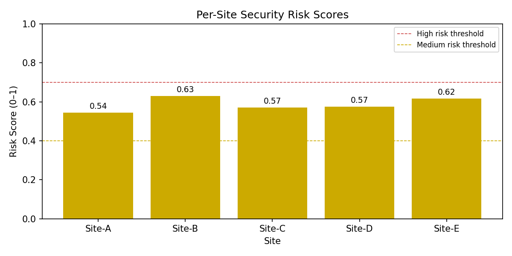
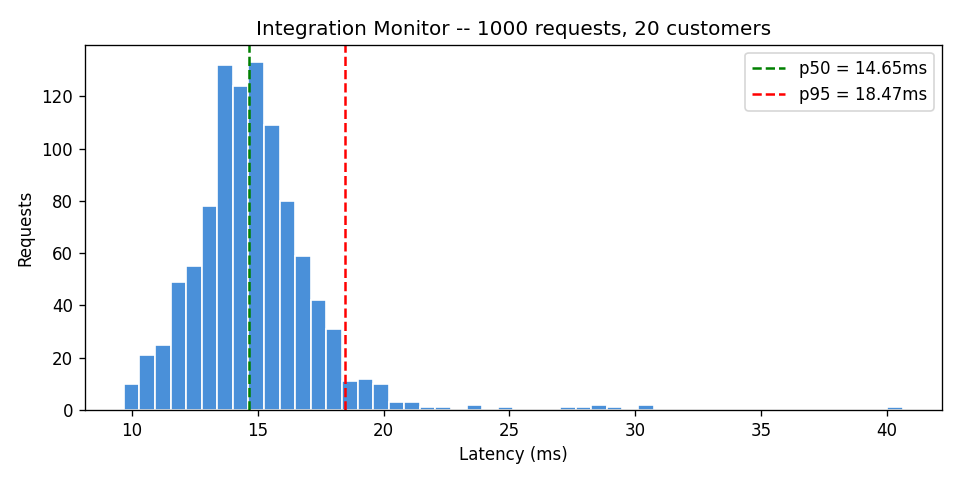

Ziaul Alam
Software engineer building backend systems, data pipelines, and ML tools. CS at LIU Brooklyn, graduating May 2026. Based in NYC.
Projects
Legal Document Classifier
Classifies legal documents -- motions, briefs, depositions, orders, exhibits -- using sentence embeddings and logistic regression. Fine-tuned transformer embeddings outperform TF-IDF baseline. Runs in a read-only Docker container; deployed as a Gradio web demo.
Pre-Trade Analytics Dashboard
Options pricing engine implementing Black-Scholes with full Greeks computation. React frontend for interactive analysis, Node.js backend with 13 passing tests and 10 benchmark scenarios. Put-call parity verified to 1e-10 precision.
Delivery Order Router
Order assignment API with greedy load balancing. Every order assigned exactly once, no dasher over capacity. FastAPI service with SQLite in-memory store, 6 invariant tests, and a 1000-request benchmark proving zero errors under load.

Go Ride Request Simulator
Concurrent ride-request state machine using goroutines and channels. Enforces strict state ordering (REQUESTED -> ACCEPTED -> IN_PROGRESS -> COMPLETED) under concurrent load. Structured JSON logs for every state transition.
Statistical Arbitrage Backtester
Pairs trading signal engine with z-score pipeline. Backtests mean-reversion strategies on correlated equity pairs using rolling spread calculations. 19 invariant tests verify no lookahead bias, correct signal logic, and bounded positions.
Distributed Generation Portfolio Monitor
Fault detection for distributed generation assets using segmented analysis. Monitors a mixed-scale fleet (small rooftop + large commercial) where naive thresholds miss faults entirely. Segmented approach catches all injected faults with near-zero false positives.

Security Risk Reporter
Security event scoring pipeline that processes 800 events across 5 sites over a 90-day window. Produces risk scores bounded [0,1], color-coded Excel dashboards, and a benchmark report. Six invariants guarantee count preservation and score bounds.

Integration Onboarding Monitor
Schema gate API that validates integration payloads before they reach the database. 100% of malformed payloads rejected at the gate. Structured JSON logs per customer, 15 passing tests, and a 1000-request throughput benchmark.

Centerbridge Webhook Relay
Webhook relay service with an append-only audit log using SHA-256 checksums. Async delivery with retries, rate limiting, and k6 spike testing. Every payload is checksummed before storage -- no silent data corruption.
Recon-Toolkit
Production-grade CLI for CSV reconciliation targeting fintech and ops teams. Primary key matching, rule-based exception labeling, manager-friendly Markdown reports, and full audit trails. Handles mismatched schemas and encoding edge cases.